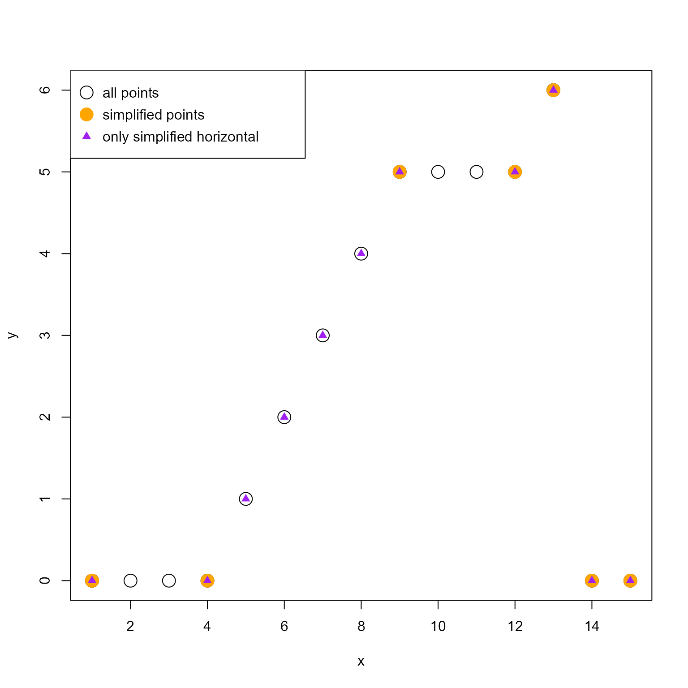

Simplify XY coordinates to minimal line segments
Arguments
- xy
numeric matrix of two columns x,y
- minN
integer minimum number of consecutive points to cause compression to occur. It requires at least 3 points inherent to the algorithm.
- restrictDegrees
numeric vector of allowed angles in degrees (range 0 to 360) of angles allowed to be compressed, when supplied all other angles will not be compressed.
- ...
additional arguments are ignored.
Details
This function takes a numeric matrix of x,y coordinates and returns the minimal matrix of x,y coordinates that represents the same line segments. It is intended in cases where there is a long repeated line segment that could be represented by far fewer points.
See also
Other Internal utility functions:
combineGRcoverage(),
compressPolygonM(),
df2colorSub(),
dfWide2segments(),
escapeWhitespaceRegexp(),
factor2label(),
geomean(),
intercalate(),
internal_junc_score(),
jamGeomean(),
list2im(),
shrinkMatrix(),
stackJunctions(),
strsplitOrdered()
Examples
xy <- cbind(
x=c(1,1:15,1),
y=c(0, 0,0,0,0,1,2,3,4,5,5,5,5,6,0,0, 0));
par("mfrow"=c(1,1));
plot(xy, cex=2);
points(simplifyXY(xy), pch=20, col="orange", cex=3);
points(simplifyXY(xy, restrictDegrees=c(0,180)), pch=17, col="purple");
legend("topleft", pch=c(1, 20, 17),# box.col="black", border="black",
pt.cex=c(2, 3, 1),
col=c("black", "orange", "purple"),
legend=c("all points", "simplified points", "only simplified horizontal"));
